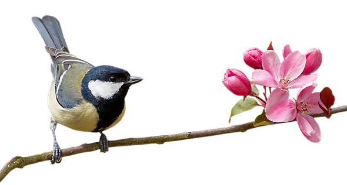

<section id="needs">
<div class="container"   style="padding-top: 25px;">

	<div class="row">
			<h1 class="text-center page-header">Birds and Water</h1>
	<div class=" col-md-offset-1 col-md-10">
	
	<p class="text-justify">
	Many people put food out for birds, but fewer provide a regular supply of clean water. Birds need water for drinking and bathing. Water is particularly important during the winter, and in dry weather during the summer.Birds get the liquid they need from their food, and by drinking. Many insectivorous birds get most of their water from food, while seed-eating birds have a dry diet and need to drink more water. Since birds have no sweat glands, they need less water than mammals. However, they do lose water through respiration and in their droppings. Most small birds need to drink at least twice a day to replace the lost water. Water is freely available to birds at all shallow edges of ponds, rivers and streams. Woodland birds may drink water droplets on leaves.
	</p>

	<p class="text-justify">
		Most small birds need to drink water at least twice a day. Most birds drink by dipping their bill in water and throwing their head back to swallow. Pigeons and doves are able to immerse their bills and drink continuously. Water to bathe in is equally important, especially in winter. It is essential that birds keep their feathers in good condition, and bathing is an important part of feather maintenance. Dampening the feathers loosens the dirt and makes the feathers easier to preen. When preening, the bird carefully rearranges the feathers and spreads oil from the preen gland so they remain waterproof and trap an insulating layer of air underneath. Should I supply drinking water for my garden birds? It is good to provide a regular supply of clean water for birds to drink and bathe in. Water is particularly important during the winter, and in dry weather. Shallow containers, like dustbin lids or plant saucers, work well, but make sure you clean them regularly to prevent diseases from spreading.
	</p>
		
	</div>

	<div class="col-md-offset-3 col-md-6">
		
	</div>
	
</section>

